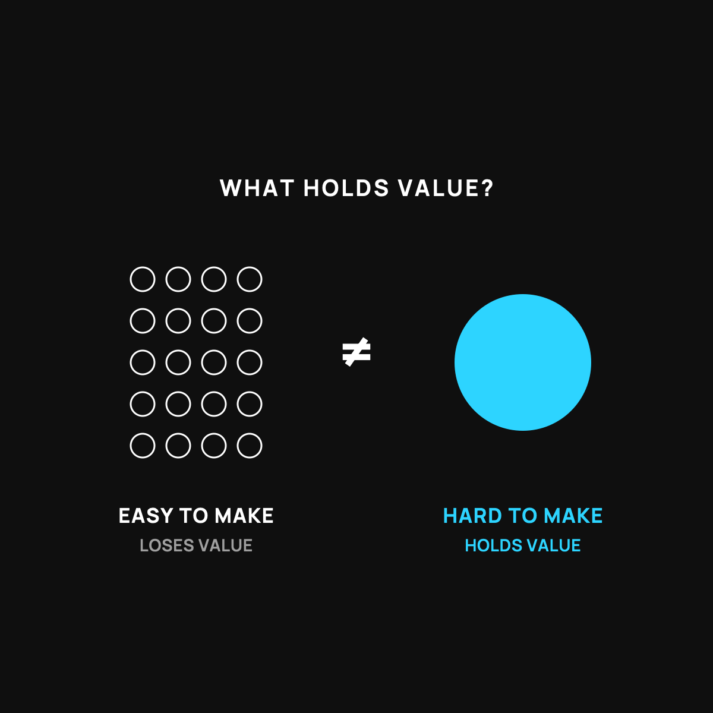

Why Hard-to-Make Money Holds Its Value
Gold is heavy to dig up on purpose. That's the whole trick.
If something is easy to make more of, it struggles to hold value. If it's hard to make, it tends to hold value well. Gold has been money for thousands of years because digging it up is slow and costly. Dollars leak because more can always be made. Bitcoin copies gold's trick with a fixed limit written into its rules.

If something is easy to make more of, it struggles to hold its value. If it's hard to make more of, it tends to hold value well. That one rule explains why gold has been money for thousands of years, and why the dollar in your pocket slowly buys less. Here's the plain version.
Two neighbors, two IOUs
Imagine two neighbors both hand you an IOU.
The first neighbor can print his IOUs at home, as many as he wants, whenever he feels like it. How much do you trust that IOU to be worth something next year? Not much. He can always make more, so each one means less.
The second neighbor can only make an IOU by doing something genuinely hard, something slow and costly that can't be faked or rushed. When he hands you one, you know he can't just crank out a thousand more this afternoon. That IOU holds its value, because making it is hard on purpose.
Money is the same. What holds value isn't magic. It's difficulty.
Why gold stuck around
Gold is the classic example. Nobody decided in a meeting that gold should be valuable. It earned the job because it's genuinely hard to get. You have to find it, dig it up, and refine it, and even with modern machines the world's supply only grows a tiny bit each year.
That difficulty is the whole point. It means no king, no bank, and no government can suddenly flood the world with ten times more gold to cover their bills. The supply can't be watered down on a whim. So it holds value across lifetimes.
Why easy-to-make money leaks
Now compare that to money that can be created quickly and in large amounts. When more can always be made, more usually is. And every time the pile grows, each piece you're holding is worth a little less. That's the slow leak I wrote about here.
It's not evil. It's just what happens to anything easy to produce. Easy to make equals easy to water down.
Where bitcoin enters the chat
This is the exact reason some people got interested in bitcoin. It's built to be hard to make more of, with a fixed limit written into its rules that nobody can change. Whether or not it ends up mattering to you, it's trying to copy the one thing that made gold hold value: hard to make, impossible to fake more of.
I keep the saving-versus-gambling line honest about all this here.
The honest catch
Hard to make is one ingredient in holding value, not the only one. People also have to want the thing, trust it, and be able to use it. Difficulty alone doesn't make something valuable. But nothing holds value for long without it.
The takeaway
Value sticks to things that are hard to make more of, and leaks out of things that aren't. Gold held its worth for centuries because digging it up is hard on purpose. Easy-to-make money slowly loses air for the opposite reason. Once you see money through that one lens, a lot of it stops being confusing.
Questions I get about this
Why has gold held its value for so long?
Because it's genuinely hard to get. You have to find it, dig it up, and refine it, and even with modern machines the world's supply grows only a tiny bit each year. No king, bank, or government can flood the world with ten times more gold to cover their bills.
Is bitcoin like digital gold?
That's the idea people are reaching for. It's built to be hard to make more of, with a fixed cap nobody can change. Whether it ends up mattering to you, it's trying to copy the one thing that made gold hold value. The honest saving-versus-gambling line still applies.
Does hard to make guarantee something is valuable?
No. Difficulty is one ingredient. People also have to want the thing, trust it, and be able to use it. Difficulty alone doesn't make something valuable, but nothing holds value for long without it.
New here?
Normaltown USA is plain-English money and healthcare help for normal people, written by a regular guy with a family of four. No jargon, no hype. Start here, or read the FAQ.